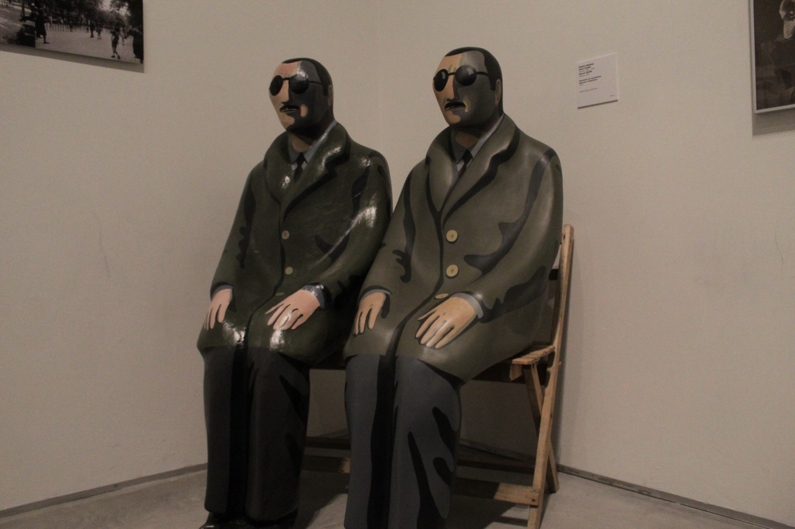
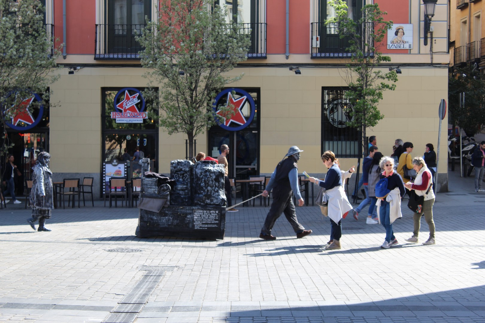
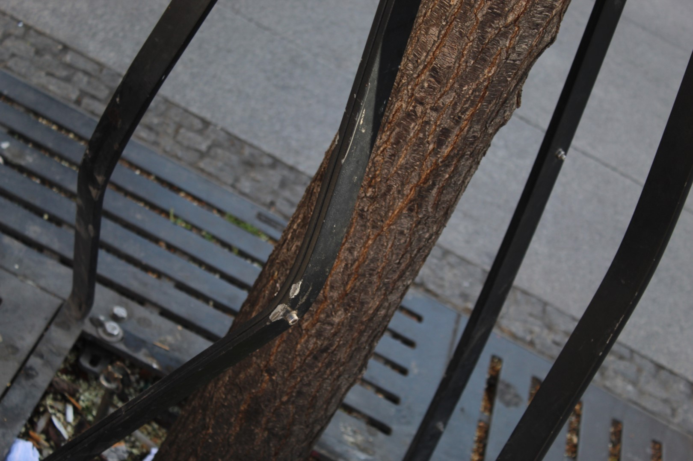
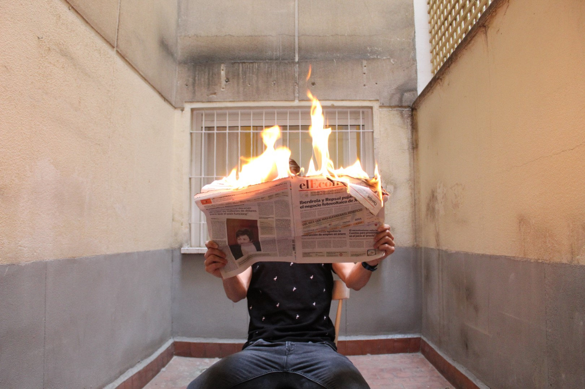
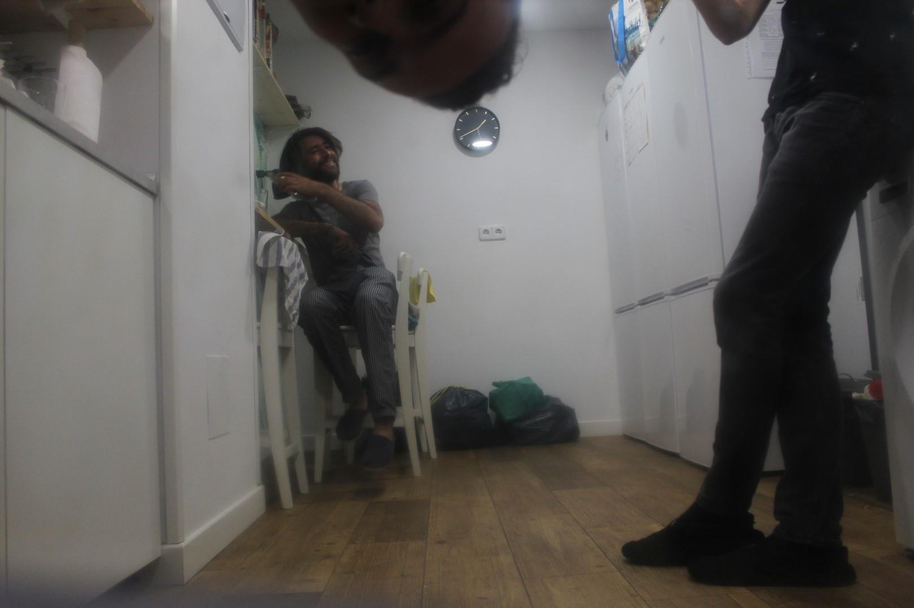

ISO: 100 | exposure: 1/200 | f/4.5

ISO: 100 | exposure: 1/80 | f/5

ISO: 3200 | exposure: 1/160 | f/3.5
ISO: 100 | exposure: 1/30 | f/5.6
ISO: 3200 | exposure: 1/50 | f/4.5
ISO: 1600 | exposure: 1/100 | f/5

ISO: 100 | exposure: 1/125 | f/6.3
ISO: 100 | exposure: 1/125 | f/6.3

ISO: 100 | exposure: 1/320 | f/6.3

ISO: 100 | exposure: 1/125 | f/5.6

ISO: 6400 | exposure: 1/2000 | f/4
ISO: 100 | exposure: 1/80 | f/4.5
ISO: 100 | exposure: 1/200 | f/5.6
ISO: 100 | exposure: 1/50 | f/5.6
ISO: 100 | exposure: 1/8 | f/5.6
ISO: 3200 | exposure: 1/200 | f/5.6
ISO: 800 | exposure: 1/25 | f/5

ISO: 1600 | exposure: 1/100 | f/3.5
ISO: 2500 | exposure: 1/40 | f/4.5
ISO: 3200 | exposure: 1/40 | f/4.5
ISO: 400 | exposure: 1/50 | f/4.5

ISO: 640 | exposure: 1/100 | f/4
ISO: 250 | exposure: 1/100 | f/3.5
ISO: 800 | exposure: 1/640 | f/3.5

ISO: 400 | exposure: 1/100 | f/3.5
ISO: 100 | exposure: 1/320 | f/14
ISO: 200 | exposure: 1/100 | f/5.6
ISO: 3200 | exposure: 1/30 | f/3.5
ISO: 6400 | exposure: 1/2000 | f/3.5

ISO: 6400 | exposure: 1/2000 | f/3.5

ISO: 3200 | exposure: 1/100 | f/5.6